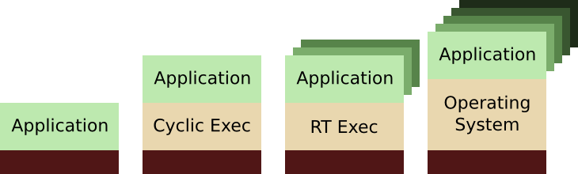

Research School of Engineering
ENGN8537: Embedded Systems and Real Time Digital Signal Processing
Which of the following would you most prefer?
A: a puppy, B: a pretty flower from your sweetie, or C: large properly formatted
Embedded
Operating Environments
Choose!
References:
Burns and Wellings Real-Time Systems and Programming Languages (Third Edition), Addison Wesley Longmain 2001
Thanks to Dr Uwe Zimmer for inspiration and material from COMP4330
The most likely situation for embedded software has the system interacting with several unpredictable input/output activities. Traditionally a single loop will deal with each activity in turn with the assumption that the loop executes with a time scale much shorter than any of the events of interest
while(1) {
keys = read_keys();
if (keys)
update_display();
parse_communications();
sensors = read_sensors();
new_data = process_sensors(sensors);
if (new_data)
send_packet();
}
- Possible non-deterministic communications latency
- Branch prediction non-determinism
- Execution time may depend on received data
This is generally fine for simple systems with limited processor capabilities and completely provable (or at least bounded) input sequences. It’s also useful as a ‘quick hack’ to test the functionality of portions of the embedded device.
The code can, however, suffer from multiple sources of non-determinism.
As the system grows, more sources of non-determinism get mixed in and it becomes harder to prove correctness.
There’s no central location that can ‘force’ correctness of execution except the programmer’s head, and it has to do it off-line.
Not every action has the same requirements regarding correct execution.
If there were a central piece of code that knew about execution priorities and could control execution flow, it could ensure at run time that the programmer’s wishes were being carried out.
Executives
This central code is called a scheduler or executive.
Activity: The base unit of code that performs a given action, or portion of an action. No activity can forcefully be ‘preempted’ by another activity and all activities have direct access to each other’s resources (including data).
Thread: A container for one or more activities that can be ‘preempted’ by another thread at the request of the scheduler.
Task: A container for one of more threads where no activity or task in one thread has direct access to the resources of an activity or task in another thread.
Application: A container for one or more tasks
By using threads or tasks, the programmer can defer decisions regarding the order in which actions should be completed until run time, when all the variables are known.
Pre-emption
Pre-emption is the process of forcing one thread to give up the resource (CPU), allowing another to take its place.
This can guard against timing overruns.
Threads and tasks, which can be preempted, also protect against timing overruns; if something is taking longer to run than it should, the executive can take appropriate action asynchronously
- Temporarily give the CPU to another, higher priority task
- Send a signal to the misbehaving task ‘warning’ it of its bad behaviour
- Terminate the misbehaving task but give it a chance to clean itself up
- Kill the misbehaving task immediately
… but what if the misbehaving task has some sort of exclusive use of a resource? Killing it prematurely may leave that resource completely unusable to other activities.
Multiprocessing
Threads may be scheduled on one or more CPUs. If more than one CPU is used, threads may run truly in parallel; otherwise they merely appear to (for some observer).
Multithreaded applications also have another major advantage in modern embedded systems: They can transparently take advantage of multicore processors.
In traditional multithreading, the idea of concurrency is present but isn’t really a reality in that there was only one CPU therefore at any instant of time to an external observer, only one thread was running. An external observer might be a peripheral or memory, not just a conscious entity! The introduction of multicore CPUs have uncovered a whole new range of bugs and false assumptions as this is no longer the case.
Operating Environments

An Operating Environment is made up of the executive, primitives to control access to resources, devices drivers and other ‘general purpose’ utilities. The central part of the operating environment of an embedded system is the executive though, so from here we will use the terms ‘operating environment’, ‘scheduler’ and ‘executive’ interchangeably. The term ‘operating system’, distinct from operating environment, will be defined later.
Bare Metal
Bare Metal systems are those discussed earlier in the lecture. They may have library support, device drivers and other utilities, however there is no central executive making decisions about how and when activities should be performed.
The correct operation of these systems must be completely proven (and provable!) off-line by the programmer.
Cyclic Executive
A Cyclic Executive can control only the execution of ‘activities’; that is, it doesn’t have the power to preempt the execution of any piece of code, only choose what happens once the current piece of code has finished running.
This type of scheduling is termed ‘cooperative’ and has the advantage that the executive need not be able to save state halfway through an execution. Everything is sequential and provable so long as the longest possible activity execution time is shorter than the shortest possible gap between critical events.
A Cyclic Executive may be implemented in a few different ways. The most simple way forward is to have a simple ring of actions that the executive calls in turn.
If less than 100% of the CPU is required, the executive can just "burn" cycles.
If more than 100% is required (overrun), the cyclic executive cannot recover.
Real-Time Executive
Real Time executives are the first of the schedulers we’ve seen that may offer preemption.
Preemption is the ability of the scheduler to evict the current thread from the CPU and hand the CPU over to another thread instead. In doing so, it must know how to save the state of the preempted thread so that when it is later given the CPU back, it can pick up where it left off with no gaps in its world knowledge. To any given thread, preemption just seems like one of its instructions took an unusually long time to execute (with some exceptions we’ll see later).
Examples
- FreeRTOS
- VxWorks
- VRTX
- QNX
- LynxOS
- MicroC/OS
- …
Co-hosted OS
In addition, it’s not uncommon to run a full operating system as a thread inside the RTE! This method can be used to improve the response time of desktop operating systems such as Linux. Suitable RTEs for this application include RTLinux, RTAI.
Operating System
Real Time Executives can generally only work with threads, not tasks. A full multi-tasking environment generally requires an operating system.
An Operating System
Kernel includes:
- (complex) Scheduler/Executive
- Virtual Memory
- Storage Arbitration
- Comms Arbitration
- …
In addition to simple scheduling, tasks require complete isolation of resources which in turn requires:
- Virtual Memory: One task’s memory location 0x10000000 will be different from another task’s memory location 0x10000000
- Storage Arbitration: The operating system must manage file systems on underlying storage devices and allocate and schedule time for each task’s requests to be met
- Comms Arbitration: For comms links supporting multiple end points (eg Ethernet) the OS must allocate and schedule time for each task’s requests to be met
- …
Kernel/Shell
The operating system was originally divided in to exactly two parts, the Kernel and Shell. The Kernel was the portion of code that provided core functionality and the shell gave the user interface. The user interface is now extended beyond the shell, however the concept of the kernel is still very much in tact.
For example, Linux is not an operating system, it’s a kernel. The operating system is formally GNU/Linux where GNU is the name of the collection of tools that exist outside the kernel.
Image Credits: שרה גולד - Wild Flowers of Israel via the PikiWiki - Israel free image collection project
Non-kernel components now often referred to as userspace
An OS userspace includes:
- Windowing system
- Network manager
- Service manager
- Application stack
- Internationalization tools (I18N)
- Power policy tools
- …
The Kernel provides mechanism, Userspace provides policy.
Mechanism of Pre-emption

In order for the executive to make the decision to preempt the running task, it requires the CPU itself. The executive must preempt the running task to determine whether it should preempt the running task?!
The answer is to use a special interrupt, generally triggered from a timer.
Interrupt occurs, executive decides to give the CPU back to Thread 2 just like a ‘normal’ interrupt.
Interrupt occurs, executive decides to give the CPU to Thread 1. It saves and modifies the internal CPU state to the interrupt ‘returns’ to a different instruction to the one it interrupted.
Thread 1 finishes processing and voluntarily calls the executive which restores Thread 2’s state and gives it back the CPU.